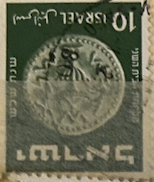
| SOURCE | TITLE| IMAGE MATCH | click to source page |
| Smithsonian Institution | Middle East | National Postal Museum | 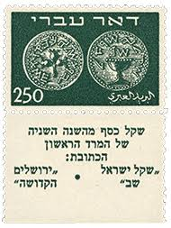 |
| Stamp Community Forum | Stamps With Coins? - Page 22 - Stamp Community Forum | 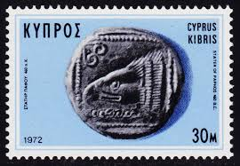 |
| Israel Institute of NZ | Part 3 – Challenging the dominant narrative of a contested land: 1922 – 1948 | Israel Institute of NZ | 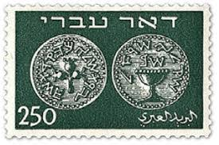 |
| Linns Stamp News | AUCTION SALE | 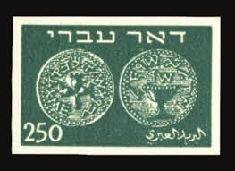 |
| Stamp Forgeries of the World | Stamp Forgeries of Israel | Stampforgeries of the World | 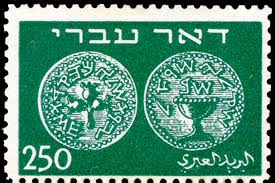 |
| Shutterstock | 4+ Thousand Stamp Coin Collection Royalty-Free Images, Stock Photos & Pictures | Shutterstock | 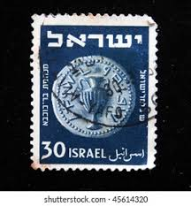 |
| Mariamawit Alemu (mariamawita) - Profile | Pinterest | 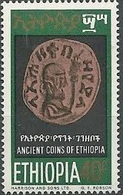 | |
| LOT-ART | בול דואר עברי 250 שנת 1948 נדיר לא חתום... in Israel | 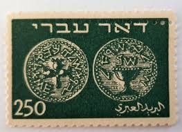 |
| Todocolección | israel iverft nº 1617, teleférico de mount carm - Buy Antique stamps of Israel on todocoleccion | 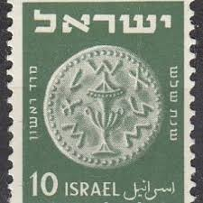 |
| Flickr | YHWH (IEHOVA, Jehovah, Jehova) - Name of God found | Flickr | 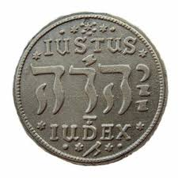 |
| eBay | Ancient near eastern silver drachm coin in very good condition | eBay | 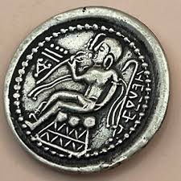 |
| Script Spotlight: The Latin Alphabet : r/AncientCoins | 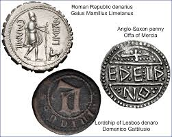 | |
| Invaluable.com | Sold at Auction: Silver Half Shekel Coin First Revolt | 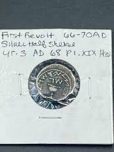 |
| Alamy | Postage stamp from Bulgaria depicting bronze coins of Septimus Severus Stock Photo - Alamy | 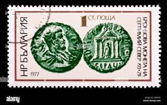 |
| HipStamp | Israel Stamp:1973 - International Stamp Exhibition: Jerusalem'73- Stamp Mint NH | Middle East - Israel, Stamp / HipStamp | 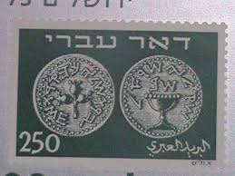 |
| Cherrystone Auctions | U.S. & Worldwide Stamps & Postal History - September 13-14, 2017 - ISRAEL | 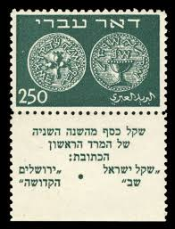 |
| Tripadvisor | THE 15 BEST Things to Do in Lonigo (2026) - Must-See Attractions | 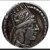 |
| Published in David Sear's Byzantine Coins and Their Values (SB 882). Heraclius AE Follis (34-36mm, 16.57g), Sicily 620 CE, overstruck on Anastasius Follis from Constantinople, 498-518 CE. (Interesting because these are somewhere | 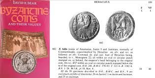 | |
| CoinArchives.com | CoinArchives.com Search Results : maier | 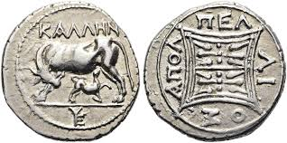 |
| CNG Coins | eAuction 369. KINGS of PARTHIA. Meherdates. Usurper, AD 49-50. AR Drachm (22mm, 3.75 g, 1h). Ekbatana mint. - CNG | 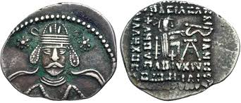 |
| Numista | Drachm - Anaxilas - Rhegion – Numista | 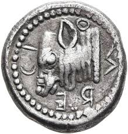 |
| Ancient Khwarazmia Artav tetradrachm coin for sale | 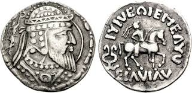 | |
| Coin Replicas | Quarter Shekel of the Bar Kochba War 132-135 A.D. | 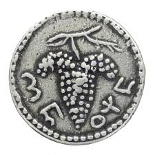 |
| CNG Coins | Auction Lots | 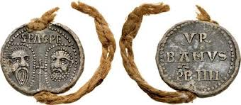 |
| eBay | ISRAEL 1950 #19 BOOKLET PANE OF 6 "ISRAEI" ERROR FROM B6B BOOKLET (SEE PHOTO) | eBay | 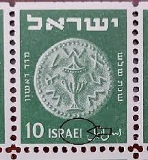 |
| eBay | Stamp Israel 1948 Israeli 250 Doar Ivri | eBay | 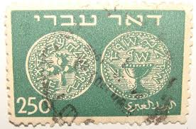 |
| Stamp Community Forum | Stamps With Coins? - Page 17 - Stamp Community Forum | 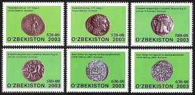 |
| YouTube | Rare 2,000-Year-Old Silver Half-Shekel Coin Discovered in Jerusalem - YouTube | 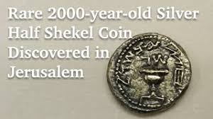 |
| The Tyrant Collection | Parthian Kingdom – The Tyrant Collection | 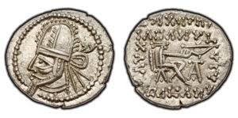 |
| Blogger.com | Stamp Art: Otte Wallish [ 1st Part (1948/1952) ] | 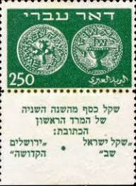 |
| Coin Talk | A Late Parthian Tetradrachm | Coin Talk | 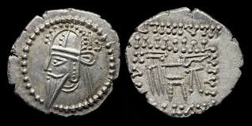 |
| Shutterstock | 3+ Thousand Israel Post Stamp Royalty-Free Images, Stock Photos & Pictures | Shutterstock | 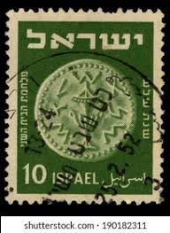 |
| Albania - 20l stamp of 1999 (#373790) | 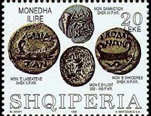 | |
| Coin Talk | Using a scanner for coins | Coin Talk | 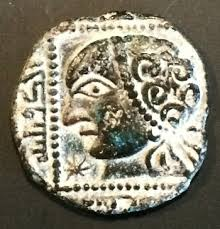 |
| eBay | Israel Scott #1/9 Proof of Doar Ivri Presentation Sheet Signed Muentz!! | eBay | 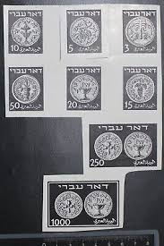 |
| kpolsson.com | Ken P's Coins on Postage Stamps | 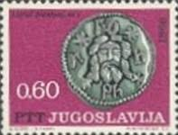 |
| eBay | Stamp Israel 1948 Israeli DOAR IVRI 250 | eBay | 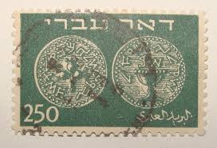 |
| acsearch.info | acsearch.info - Auction research | 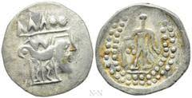 |
| Colonial Coins & Medals | ROMAN REPUBLIC. L. Cornelius Sulla Felix, Denarius, 84-3 BC [ARR-71] | Colonial Coins & Medals | 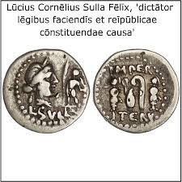 |
| mishkanministries.org | Exhibit Pieces - Coins | 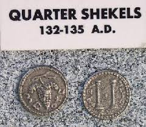 |
| kpolsson.com | Ken P's Coins on Postage Stamps | 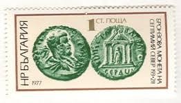 |
| Wikipedia | Orthagoria - Wikipedia | 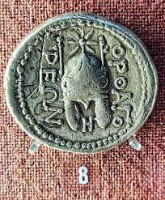 |
| eBay | Israel Scott #7 Doar Ivri 250p Right Marginal Single Double Perf Error MNH!! | eBay | 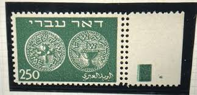 |
| Etsy | Half Shekel Jewish Judean Coin Jerusalem Biblical Quality Museum Remake Silver Plate Coin Xmas Passover Easter Gift Education Tax Israel - Etsy Israel | 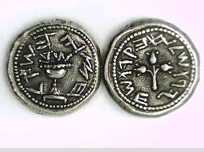 |
| Coin Replicas | Marc Antony Legionary Denarius. 32-31 BC - Coin Replicas | 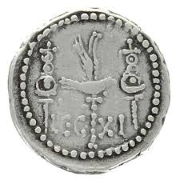 |
| ResearchGate | A composite image of one die combination of Herod's largest coin (RPC... | Download Scientific Diagram | 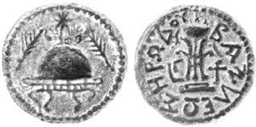 |
| MA-Shops | Roman Republic (Imperatorial) AR Denarius 47 - Spring 46 BC Q. Caecilius Metellus Pius Scipio AEF, dark patina | MA-Shops | 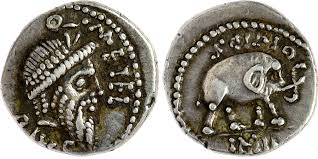 |
| lastdodo.com | Stamps from Israel Stamp catalogue - LastDodo | 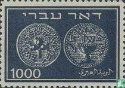 |
| VCoins | Illyria, Dyrrhachion. Circa 120-80/70 BC. AR Drachm (3.33g, 20mm). Aphrodisios and Kallenos, magistrates. Maier 238 | 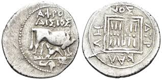 |
| Etsy | The Famous Half Shekel or Shekel Coin Sterling Silver 925 Jewish Judaean Jewelry Coin Xmas Gift Christmas Present Passover Pasha Easter - Etsy Australia | |
| HipStamp | Stamps Are Friends / HipStamp | |
| CNG Coins | CNG: Article Page | |
| eBay | Israel Scott #2, Bale FCV19, Doar Ivri 5p Horizontal Pair Imperf Between MNH!! | eBay | |
| Numis Forums | The Gepids. Uncertain Ruler. In the name of ANASTASIUS - Page 2 - Byzantine Coins - Numis Forums | |
| Dreamstime.com | Stamp of Israel. Lehi, Flame, Circa 1991 Editorial Stock Photo - Image of mail, fire: 106530498 | |
| Etsy | Buy Half Shekel Jewish Judean Coin Jerusalem Biblical Quality Museum Remake Silver Plate Coin Xmas Passover Easter Gift Education Tax Israel Online in India - Etsy | |
| VCoins | Coin, Illyria, Drachm, 275-48, Dyrrhachium, , Silver, HGC:3-40 | |
| Blogger.com | MS3304 --- Buddies' WIKI: Q2) Five Ages of Tourism: Development and Real Life Examples | |
| VCoins | Arabia coins for sale - Buy Arabia coins from the most respected dealers around the world | VCoins | |
| WordPress.com | A Few More Photos of the Jordanian 'Lead Codices' – Zwinglius Redivivus |